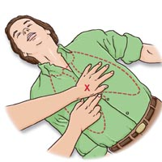

|
|
 |
 |
|
|
|
REANIMACIÓN CARDIOPULMONAR BÁSICA
 Técnica que ayuda a reactivar el cese de las funciones vitales del organismo, como la respiración y actividad cardiaca.
Las principales causas que llevan a un paro cardiaco en los menores de ocho años, son la neumonía, laringitis, cuadros infecciosos o asfixia cuando, los que pueden llegar a un compromiso de conciencia o a un paro cardiaco.
Cuando una persona se ve afectada por alguna de estas complicaciones, es posible que inicialmente se comprometa el cerebro, debido a que no puede permanecer sin suministro de oxígeno. Si esto ocurre, puede haber daños irreparables, por lo que conocer las técnicas básicas de reanimación es fundamental.
- ¿Cómo debemos actuar?
Si el paciente respira en forma rápida, se le hunden las costillas y el esternón, está pálido y luego pasa a un color morado, es posible que esté frente a una persona con una falla respiratoria.
“Cuando hay un compromiso hemodinámico significa que la sangre no llega a órganos como el cerebro, riñones y corazón. Por eso, el pequeño se ve pálido, ojeroso y el organismo comienza a aumentar la frecuencia cardiaca para compensar el líquido que le falta acelerando el corazón”, explica la Dra. Leticia Yánez, médico jefe de la Unidad de Paciente Crítico Pediátrico (UPCP) de Clínica Santa María.
Antes de realizar la reanimación, es necesario evaluar si la persona está consciente, agitada, desmayada, conversa en forma normal o con dificultades, para decidir qué hacer y constatar si hay o no otro tipo de lesiones y daños neurológicos. “Si es menor de ocho años debe evaluar, actuar rápido y finalmente pedir ayuda. Mientras que en los adultos y mayores de ocho años, tiene que pedir ayuda y luego iniciar la reanimación, ya que a esta edad se asume que la persona podría estar frente a un paro cardíaco, por eso primero debe llamar a un especialista”, asegura la Dra. Yánez.
- Métodos de Reanimación
En caso de emergencia, lo primero que debe hacer es ver si se mueve el tórax, escuchar si la persona respira y sentir flujo de aire.
Una vez hecho esto, extienda la cabeza levemente y eleve el mentón. Esto permite abrir la vía aérea para que pase el flujo de aire. Si hay traumatismo solo eleve el mentón, ya que la extensión puede producir lesión de la médula cervical si hay lesión a ese nivel.
Si la persona comienza a respirar, póngala en posición lateral con la pierna recta sobre la cual se apoya y la que queda arriba flectada apoyando la rodilla en el suelo. De esta manera, la persona seguirá respirando espontáneamente y, en caso de presentar vómitos, éste pueda fluir hacia fuera y no obstruya la vía aérea.
- ¿Qué pasa cuando no respira?
Se debe hacer respiración boca a boca:
- Cierre las fosas nasales apretando la nariz con sus dedos.
- Selle con sus labios el contacto boca a boca (si el paciente es un lactante, la boca del adulto debe cubrir la boca y nariz del pequeño).
- Realice dos respiraciones -insuflar y separarse, insuflar y separarse-.
- Mantenga la vía aérea permeable.
- Palpe el pulso carotídeo con dos dedos -medio a índice- deslizándolos a un costado de la traquea entre cinco y 10 segundos.
Si hay pulso, pero no se ha restablecido la respiración, continúe con 15 respiraciones por minuto, con un flujo constante en un ritmo que sea capaz de mantener y sin agotarse. Después de repetir 15 veces la maniobra vuelva a evaluar.
- ¿Qué hacer cuando no hay pulso?
Si esto ocurre, es posible que esté frente a un paro cardíaco respiratorio, por lo que debe iniciar compresiones torácicas alternadas con respiraciones. Haga 15 compresiones y deténgase para efectuar dos respiraciones.
Coloque dos dedos sobre la punta inferior del esternón en donde se une la línea de las costillas, ubique el talón de la mano diestra y apoye la otra con la que debe entrecruzar los dedos y traccione hacia atrás.
La posición debe ser de rodillas a un costado, perpendicular al eje del paciente en ángulo recto, ejerciendo el peso del cuerpo hacia la caja torácica de la persona que recibe la ayuda. En adultos se debe hundir tres a cinco centímetros de profundidad, en niños dos a tres centímetros y en lactantes uno a dos centímetros.
Esta maniobra debe realizarse en forma continua hasta que llegue el apoyo médico.
Cuando hay una obstrucción de la vía aérea por un cuerpo extraño, tanto en niños como en adultos hay que hacer una compresión abdominal que haga expulsar el cuerpo extraño, llamada Maniobra de Heimlich. “Si el afectado aún está conciente, párese detrás de él y ubique con el puño la boca del estómago que está entre el ombligo y el borde costal. Empuñe la mano, abrace por atrás y ejerza una compresión fuerte y enérgica hacia atrás y adelante. |
 |
|
|
| | | |
| |
|
|
|
|
|